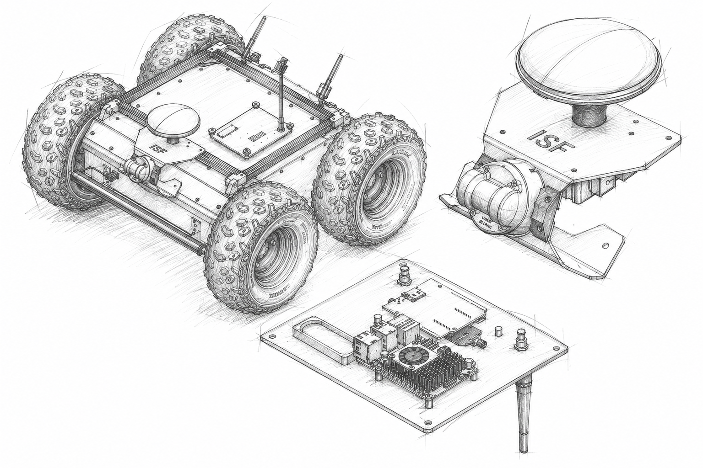

Engineering · 03
GNSS RTK Module Integration
Designed, integrated and validated a modular GNSS RTK localization subsystem for a ROS2-based mobile robot, enabling centimeter-level outdoor positioning through mechanical, electrical and software integration.
Field
Robotics
Period
2026
Focus
Mechanical engineering / Robotics / ROS2
The project
Bringing centimeter-level localization to an autonomous mobile robot.
Outdoor mobile robots require reliable global positioning to complement LiDAR, cameras and inertial sensors. While SLAM provides accurate local positioning, accumulated drift makes long-term localization difficult in large open environments. The objective of this project was to integrate a GNSS RTK localization system into the Husarion Panther platform and validate its performance under real operating conditions. The work combined mechanical design, hardware integration, ROS2 software integration and experimental verification into one modular subsystem.
Key challenges
Designing a modular localization subsystem.
The project required the development of a complete localization subsystem that integrates seamlessly into the existing robot while maintaining accuracy, modularity and reliability.
- Mechanical integration of the GNSS antenna and LiDAR
- Design of a modular interface hatch with IP54 protection
- Precise antenna positioning for maximum sky visibility
- ROS2 integration using a dedicated Raspberry Pi 5
- Cable management and EMC-aware hardware layout
- Experimental validation of positioning accuracy

Reflection
What I took from the experience.
This project strengthened my understanding of systems integration. Designing reliable robotics requires more than selecting components—it requires careful consideration of mechanical design, electrical interfaces, software architecture and verification as one coherent system. Working across CAD, manufacturing, ROS2 integration and experimental validation reinforced the importance of building solutions that are not only functional, but modular, maintainable and measurable.
xx